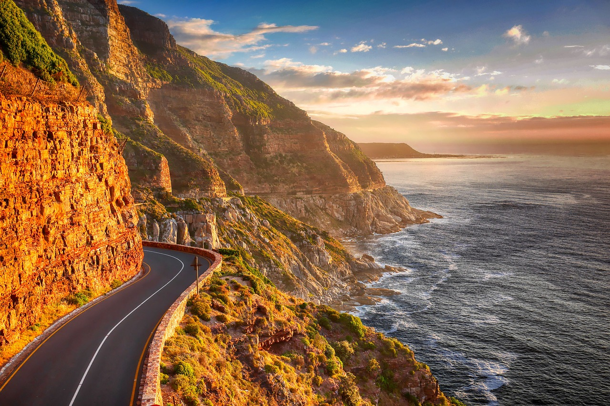

Introduction
太行山最动人的奇迹
万仙山景区位于新乡市辉县沙窑乡，是国家4A级旅游景区、国家地质公园。景区由郭亮村、南坪、罗姐寨三部分组成，其中郭亮村因一条震惊世界的挂壁公路而闻名遐迩。
郭亮挂壁公路（又称绝壁长廊）全长约1300米，完全开凿在海拔1700米的悬崖绝壁上。1972年至1977年，郭亮村的13名村民在村支书申明信的带领下，用钢钎、铁锤等最原始的工具，硬是在红岩绝壁上凿出了这条通往外界的道路，被誉为"世界第九大奇迹"。
挂壁公路外侧开有35个天窗，用于采光和排渣。站在天窗边向外望去，万丈深渊就在脚下，惊险刺激。这里是电影《举起手来》的取景地，也是众多影视剧的拍摄基地。郭亮村也因此成为著名的"影视村"。
"郭亮挂壁公路是人类挑战自然极限的见证，是太行精神的丰碑。"
Visitor Info
🕐
建议时长
4-6小时
🎫
门票
¥107（含景交）
📍
地址
辉县·沙窑乡
🚌
交通
新乡拼车约1.5h
⏰
开放时间
07:30-18:00
🏠
住宿
郭亮村民宿¥200+
Route
游览路线推荐
🚪 景区入口 → 郭亮村（1h）
乘景区交通车至郭亮村入口，步行穿越郭亮挂壁公路（绝壁长廊）。沿途每经一个天窗都值得驻足观赏，从不同角度感受悬崖的险峻和工程的伟大。
🏘️ 郭亮村 · 崖上人家（1h）
出挂壁公路即到郭亮村，游览崖上人家观景台，这里是拍摄挂壁公路全景的最佳位置。村子里保留了许多石屋古建筑，可感受太行山居生活。
🎬 影视村 → 炮楼（0.5h）
郭亮村是《举起手来》等多部电影的取景地。村口的炮楼是影视拍摄留下的人工景观，也是俯瞰峡谷的绝佳位置。
🌲 南坪 · 丹分沟（2h）
从郭亮乘车至南坪，游览丹分沟、黑龙潭瀑布。丹分沟是一条U形峡谷，溪水清澈，绿树成荫，适合亲子徒步。
Gallery
万仙山光影
